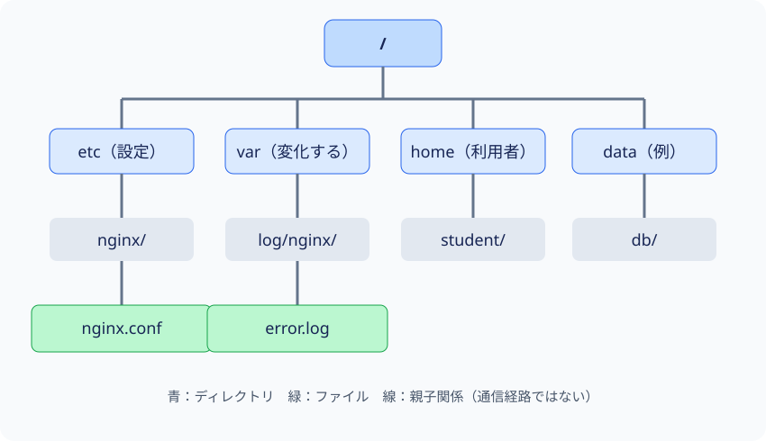

第24講 Linuxのディレクトリ構造と基本コマンド
第3編 OS｜全224講中第24講
到達目標：Linuxのディレクトリ構造を理解し、絶対・相対パスを区別して安全にファイルを調査できる。操作の影響を判断できる。
資料・照合状況：Linuxの標準的なファイル配置、GNU coreutilsの一般的なコマンド、Filesystem Hierarchy Standardに基づく説明。公式仕様の特定版・該当ページおよび製品別マニュアルは今回未照合。すべてのコマンドは未実行。例示ログ・環境は架空。
重要度：A必須＝ディレクトリ・パス・pwd/ls/cd・閲覧・探索・権限、B理解補助＝コピー・移動・マウント・容量、C発展＝設計と製品への応用。
1. なぜディレクトリを学ぶのか
前講ではsystemdがサービスを起動すると学びました。ところでNginxの設定ファイルや起動ログは、どこに置かれているのでしょうか。Linuxでは、ファイルの置き場所を知ることが障害調査の第一歩です。今回の目標は、①目的のファイルを探す、②場所を移動する、③中身を安全に読む、④変更前に危険性を判断する、の四つです。
2. ファイルとディレクトリを先に区別する
ファイルはデータや設定を保存するものです。ディレクトリはファイルや別のディレクトリを整理する入れ物です。Windowsのフォルダーとほぼ同じイメージです。例えば/etc/nginx/nginx.confはNginxの設定ファイルです。/etcと/etc/nginxはディレクトリ、最後のnginx.confがファイルです。/はLinuxのディレクトリ構造の一番上にあるルートディレクトリで、すべての絶対パスの出発点です。
3. パスとは住所のこと
ファイルの場所を示す文字列をパスと呼びます。/var/log/nginx/error.logは、/からvar、log、nginxの順にたどってerror.logへ到達する住所です。最初が/なら絶対パスで、今どこにいても同じ場所を示します。logs/app.logのように/から始まらないものは相対パスで、今いるディレクトリによって指す場所が変わります。Linuxでは/がディレクトリの区切り文字です。Windowsのドライブ文字とは違い、マウントしたディスクも一つのディレクトリの木につながります。
4. 現在地と移動：pwd・ls・cd
Linuxのコマンド操作では、今いるディレクトリをカレントディレクトリと呼びます。まずpwd（print working directory）で現在地を確認します。次にls（list）で中身を一覧表示し、cd（change directory）で移動します。
pwd
ls
cd /var/log
pwd
ls
例えば最初のpwdが/home/student、移動後が/var/logなら、場所が変わったことが分かります。lsは表示するだけで、ファイルを変更しません。cd /var/logは絶対パスで移動します。
5. 特殊な記号：.・..・~
.は今いるディレクトリ、..は一つ上のディレクトリ、~は通常自分のホームディレクトリを表します。ホームディレクトリとは、利用者ごとに用意される作業場所です。例えば/home/student/workにいるならcd ..で/home/studentに戻ります。cd ~でホームに移動できます。cdだけでも通常はホームに移動します。
cd /var/log
cd ..
pwd
cd ~
pwd
最初のpwdは通常/var、二回目は自分のホームになります。相対パスを使うときは現在地を誤認しないことが重要です。
6. Linuxの代表的なディレクトリ
Linuxではファイルの役割ごとに置き場所が大まかに分かれています。すべての環境が完全に同じではありませんが、まず次を覚えます。
| 場所 | 何がある？ | 現場での例 |
|---|---|---|
/etc | 主にシステム・サービスの設定 | /etc/ssh/sshd_config |
/var/log | 主にログ | /var/log以下のサービスログ |
/home | 一般ユーザーの作業領域 | /home/student |
/root | rootユーザーのホーム | 管理者用の作業ファイル |
/usr | アプリや共通のプログラム・データ | /usr/bin |
/bin・/sbin | 基本コマンド（/usrへのリンクの場合あり） | lsなど |
/tmp | 一時ファイル | 一時的な作業データ |
/var | 変化するデータ | ログ、キャッシュ、スプール |
/dev | デバイスを表すファイル | /dev/sdaなど |
/proc | カーネルが見せるプロセス等の情報 | /proc/meminfo |
/sys | カーネルが見せる機器等の情報 | /sys/class |
/run | 起動中の一時的な実行状態 | PIDファイル等 |
/mnt・/media | ファイルシステムを接続する場所の例 | 外部ディスク |
/etcは設定、/var/logはログ、/homeは自分の作業場所という三つから覚えましょう。
7. ディレクトリの木を図で読む
次の図は実際のLinuxを単純化したものです。上の/から枝分かれします。/etc/nginx/nginx.confは/→etc→nginx→nginx.confの順にたどります。/var/log/nginx/error.logは/→var→log→nginx→error.logです。図の横の線は親子関係であり、データが流れる方向ではありません。

この図で/dataは業務データ用に作った例です。Linux標準で必ず存在する場所ではありません。
8. ファイルを読む：cat・less・head・tail
設定やログを調べるとき、最初は書き換えずに読むことが大切です。catは内容を一度に表示します。lessは長いファイルをページ送りで読みます（終了はq）。headは先頭、tailは末尾を表示します。
cat /etc/os-release
less /etc/os-release
head -n 5 /etc/os-release
tail -n 20 /var/log/example.log
/etc/os-releaseにはOSの識別情報が入ります。最後のexample.logは架空の例で、実際に存在するとは限りません。tail -n 20は末尾20行を読む指定です。ファイルがない場合のエラーは、OSが壊れたという意味ではなく、指定先が存在しない可能性があります。
9. ファイルの種類と隠しファイル：ls -l・ls -a
ls -lは名前だけでなく、種類・権限・所有者・サイズ・更新日時などを表示します。例えば-rw-r--r--の先頭-は通常ファイル、drwxr-xr-xの先頭dはディレクトリです。残りのrwxは読み・書き・実行などの権限で、前講までの知識につながります。
ls -aは名前が.で始まる隠しファイルも表示します。隠しファイルは秘密情報という意味ではなく、通常の一覧で省略されるという意味です。
ls -l /etc
ls -a ~
ls -lで表示される時刻やサイズは状況を調べる手掛かりですが、変更の理由までは分かりません。
10. 探す：findとgrep
どこにファイルがあるか分からないときはfindを使います。ファイル名で探す操作です。例えばfind /etc -name 'sshd_config'は/etc以下で指定名を探します。アクセス権がない場所ではPermission deniedが出ることがあります。
一方grepは、ファイルの中から文字列を探す操作です。
find /etc -name 'sshd_config'
grep -n 'NAME=' /etc/os-release
grep -nは一致した行の行番号も表示します。findは場所、grepは中身、という違いを覚えてください。ログを大量に検索するときは対象範囲を絞り、機微情報の扱いに注意します。
11. 作る・コピーする：mkdir・cp
検証用の自分のホームディレクトリで練習します。mkdirはディレクトリを作る、cpはファイルをコピーするコマンドです。
mkdir -p ~/infra-lab/logs
cp /etc/os-release ~/infra-lab/os-release.copy
ls -l ~/infra-lab
-pは途中のディレクトリも必要に応じて作る指定です。コピー元はそのまま残り、コピー先に別のファイルができます。ただしコピー先に同名ファイルがあると上書きする場合があるため、業務ファイルで試さないでください。
12. 移動・名前変更・削除：mv・rm
mvはファイルの場所や名前を変えます。rmはファイルを削除します。どちらも業務環境では影響が大きいため、まず自分の練習用ファイルで確認します。
mv ~/infra-lab/os-release.copy ~/infra-lab/os-info.txt
ls -l ~/infra-lab
mvの後は旧名がなくなり、新名が表示されます。rmは削除操作なので、この講義では実行例を提示するだけにとどめます。
# 実行しない説明用の構文
rm ~/infra-lab/os-info.txt
特にrm -rはディレクトリ内を再帰的に削除し、一般にゴミ箱へ移動しません。絶対パス・対象・バックアップを確認するまで実行しないことが原則です。
13. マウントとの関係：/dataは別ディスクでも同じ木の中
前講のマウントを思い出しましょう。例えばデータ用ディスクを/dataにマウントすると、利用者やアプリからは/data/dbという普通のディレクトリのように見えます。しかし実際の保存先は別のディスクかもしれません。
findmnt /data
df -h /data
findmntはその場所にどのファイルシステムがマウントされているか、df -hはその場所を含むファイルシステムの容量・空き状況を調べます。/dataというディレクトリが存在することだけでは、意図したディスクがマウントされている証拠にはなりません。マウント失敗時に空のマウントポイントへ書き込んでしまう事故を防ぐため、必ず実際のマウントを確認します。
14. パスの権限とエラーを切り分ける
ファイルが存在しても、権限がなければ読めません。Linuxではファイル自身の読み取り権限だけでなく、そこへ至るディレクトリの探索権限（x）も必要です。
No such file or directoryは指定先が見つからない場合など、Permission deniedは権限不足などの場合に出ます。どちらも原因を一つに断定するメッセージではありません。
pwd
ls -ld /var /var/log
ls -l /etc/os-release
ls -ldはディレクトリそのものの情報を見る指定です。まずパスの誤記、現在地、存在、権限を分けて確認します。むやみにsudoで回避すると本来の権限問題を隠すため、必要性を確認します。
15. 障害例：設定ファイルが見つからない
架空の例です。運用担当者がcat etc/nginx/nginx.confを実行し、No such file or directoryが出ました。現在地は/home/operatorです。
ここでetc/nginx/nginx.confは相対パスなので、実際には/home/operator/etc/nginx/nginx.confを探します。意図した設定が/etc/nginx/nginx.confなら、先頭の/が必要です。
pwdで現在地を確認する。ls -l /etc/nginx/nginx.confで絶対パスを確認する。- ファイルが存在すれば、
less /etc/nginx/nginx.confで読む。 - それでも見つからなければ、インストール先や設定ファイルの実際の場所を調べる。
エラーが出たらすぐにファイルを作るのではなく、まず指定した住所が正しいかを確認します。
16. 障害例：ログが増えてディスクがいっぱい
Webサービスが書き込むログが増え、/varを含むファイルシステムの空き容量が減ったとします。ログが書けなくなると、サービスの動作にも影響する可能性があります。
df -h /var/log
du -sh /var/log/*
dfはファイルシステム全体の使用量、duは指定したディレクトリやファイルが使う容量を調べます。du -sh /var/log/*はアクセス可能な直下の項目を集計する例です。結果が一致しない場合もあり、削除済みだが開かれたファイルなど追加確認が必要です。
対策としてはログローテーション（古いログを切り替え・保管する仕組み）や保存期間の見直しを検討します。ログを無断削除すると障害調査に必要な証拠を失うため、保存要件を確認します。
17. 実務製品へのつなぎ方
Oracleではデータファイル、設定、診断ログの場所がそれぞれ異なり得ます。/dataが使えるか、DBがどのパスを参照しているかを確認します。Oracleの実際の配置は構成・版に依存します。
JP1では、ジョブが参照する入力ファイルや出力先のパスを間違えると、サービスが動いていてもジョブは失敗します。実行ユーザー、カレントディレクトリ、絶対パス、権限を確認します。
Citrixでも、ユーザープロファイルやログの保存場所、アクセス権が問題になることがあります。製品版ごとの標準パスを決めつけず、実際の設定を調べます。
18. 設計判断：どこに置けば運用しやすいか
設定、業務データ、ログ、一時ファイルを同じ場所に無計画に置くと、障害調査や容量管理が難しくなります。一般に設定は/etc、変化するログは/var/log、利用者の作業は/homeなど、役割に沿って配置します。ただし製品の標準構成やセキュリティ要件が優先です。
業務データを専用の/dataに置く設計では、容量監視やバックアップを分離しやすくなります。一方、マウント失敗が業務停止につながるため、起動時の依存関係とマウント確認が必要です。ログ用領域を分ける場合も、容量上限・保管期間・監視を合わせて設計します。
19. まとめと次の確認
今回の中心は五つです。①/はディレクトリ構造の頂点、②絶対パスは/から始まり相対パスは現在地に依存、③pwd・ls・cdで現在地と移動を確認、④cat・less・find・grepで安全に調べる、⑤削除・上書き・マウントは実務影響を判断する。
第23講のsystemdがNginxを起動する際も、設定ファイルやログのパスが重要です。次の講義では、この基礎を使ってLinuxの操作をさらに深めます。